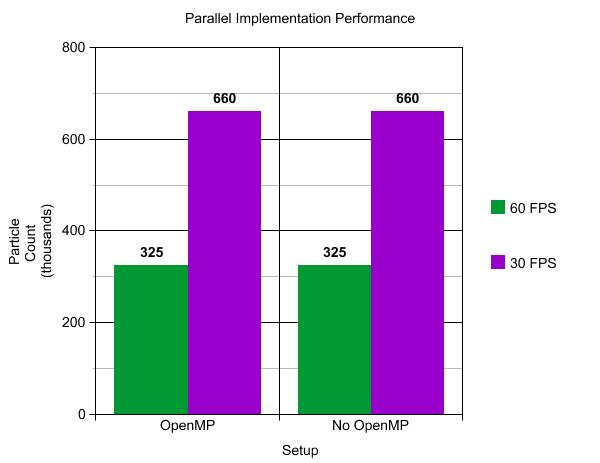

Particle Systems
Group Members
- Liam Tyler
- Bridger Herman
Description
The goal of this assignment was to create a particle system to help with the following four simulations: A ball bouncing on a floor, a water fountain, a fire, and fireworks. We did those, as well as a smoke simulation.
Difficulties
We had a lot of difficulties for this project, about four main ones. The first was getting the balls to be normal mapped, and calculating where the depth of the fragment should be. Next was having transparent particles and blending them properly in order. After that we had many bugs with the emitters. Lastly, getting all of the different types of particles to be on the screen simultaneously was difficult because we had to redo a lot of our structure. Overall it was a challenging project, most of it not related to the actual particle system, but how to draw it.
Code
Download zip file of codeLink to Github
Simulations
- Bouncing Ball
- Water
- Fire
- Smoke
- Fireworks
Features
- 3D implementation
- 3D user controlled camera
- Particle-Obstacle Interactions (arbitrary planes and spheres)
- Textured sprites for particles (besides balls)
- Translucent particles
- Benchmarks 1 - 4: Can have over 100k particles with 30+ FPS
- Thread parallel implementation (see below for performance details)
- Billboarding used for the particles
- Normal mapping and diffuse lighting for the balls to make them look like real spheres
- Point, disc, hemisphere, and sphere emitters
Controls
- W,A,S,D: Move the camera forward, backwards, left, and right
- Mouse: Rotate the camera
- P: Pause the simulation
- Space: Emit particles from currently selected emitter
- F: Launch Firework
- 1 - 5: Select specific emitter
- Arrow Keys: Move the Sphere forward, backwards, left, and right
Tools Used
- OpenGL for the rendering
- SDL2 for the window management and user interaction
- GLM for the vectors and matrices
- OpenMP for parallelizing the particle updating
Implementation Details
Our system in general worked as following every frame:
- Update the particles on the CPU. This would be updating the particle's position, velocity, age, and any other relevant data. Delete the old (dead) particles in this stage.
- Stream the data that is relevant for drawing the particles to the GPU.
- Draw the particles.
To further describe each simulation:
Bouncing Balls: All of our particles are billboarded quads. To make the quads seem like actual spheres though, we used normal mapping to get the correct lighting for each fragment. We also recalcuated the depth of the fragments so that intersecting spheres looks correct. These are fully opaque, and rendered first.
Water: For
Fire:
Smoke:
Fireworks:
Thread Parallel Performance
We later used OpenMP to help with the updating of the particles. To do this however, we had to change our implementation. If a particle's age is past its lifetime, we delete it bu just moving the last particle in the array into the now dead particle's spot. The problem with this, is that it cannot be done in parallel. So with OpenMP we switched it so that when a particle should be deleted, it adds the particle to a locked list, but does not delete it yet. After the updates, the deleting is done with one thread. Here were our results:
We were initially confused as to why we got no performance benefit. We figured out that it is due to two reasons: Caching, and the locked array. The locked array is obviously going to slow it down a little, but there aren't that many deletes per frame, so it doesn't explain everything. The rest is explained by our particle class having many attributes, so each particle is ~90 bytes. If we try to have hundreds of thousands of particles, we end up having a huge array. This means a lot of cache misses using multiple threads, and if we have not that many particles, it hardly matters whether you have parallelization or not. If we had used the 'struct of arrays' approach, instead of our 'array of structs', we would probably see improvement here.
Videos
Images:

A snapshot of a single ball bouncing across the floor
Artistic Submission:
Failed attempt to texture billboards with a fire shape
Attempt two for texturing billboards with a fire shape
Normal mapping gone wrong, except for the edges
Calculating depth for normal mapped billboards gone wrong, giving an outline